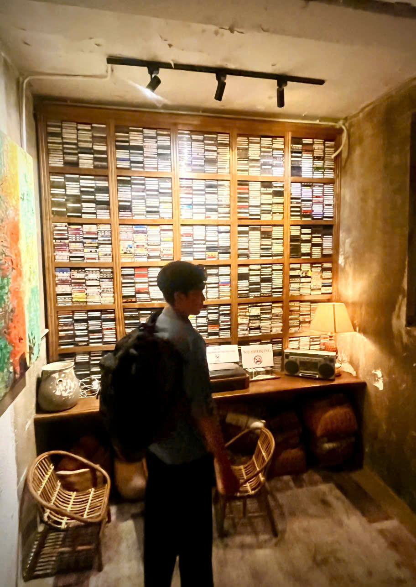

Knowledge Distillation
Developing effective knowledge transfer methods across models with different architectures, tokenizers, and representation spaces.
Researcher in Natural Language Processing (NLP)· HUST

I hold a Bachelor's degree in Data Science and Artificial Intelligence from Hanoi University of Science and Technology (HUST) and am a researcher at the DreamAI Research Lab.
My primary focus is on Artificial Intelligence research, particularly in exploring new ideas, developing novel methods, and advancing AI capabilities. Beyond research, I am passionate about education and knowledge sharing, as well as contributing to the AI community through collaboration, teaching, and community-driven initiatives.
I believe in the power of research, education, and collaboration to turn ideas into meaningful impact.
My research interests focus on large language models (LLMs) and representation learning, with an emphasis on developing practical AI solutions, improving model efficiency, and making better use of computational resources.
Developing effective knowledge transfer methods across models with different architectures, tokenizers, and representation spaces.
Exploring representation spaces, semantic alignment, and feature transfer to improve how neural networks learn and share knowledge.
Investigating LLM capabilities, model adaptation, and training strategies to improve knowledge acquisition and language understanding.
Improving model efficiency through distillation, quantization, merging models, parameter-efficient fine-tuning, and resource-aware inference.
Developing AI methods for speech assessment, pronunciation analysis, phonetic alignment, and intelligent language learning.
Translating AI research into practical applications through intelligent systems that address real-world problems.
Research visits, papers, and the occasional reason to celebrate.
I successfully passed the Qualifying Exam. Congrats to me!
I began a research visit at UKP Lab, TU Darmstadt 🇩🇪 with Prof. Iryna Gurevych.
Two papers were accepted at ACL 2026. Read the announcement here.
FAID was accepted for an oral presentation at EACL 2026. See you in Rabat 🇲🇦!
Started a new chapter in trustworthy AI research.
Presented our work at an international workshop.
I keep a page of useful resources related to AI/ML, some stories from home, and recommendations for friends planning a trip to Viet Nam.
Miscellaneous ↗My main research interests are in the area of cross-token representation learning and natural language processing.
Quoc Phong Dao, Hoang Son Nguyen, Pham Khanh Chi et al.
Quoc Phong Dao, Hoang Son Nguyen, Pham Khanh Chi et al.
Faculty collaborators
Students & mentees
Whether you want to discuss research, share ideas, or just say hi, my inbox is open.
Ha Noi, Vietnam